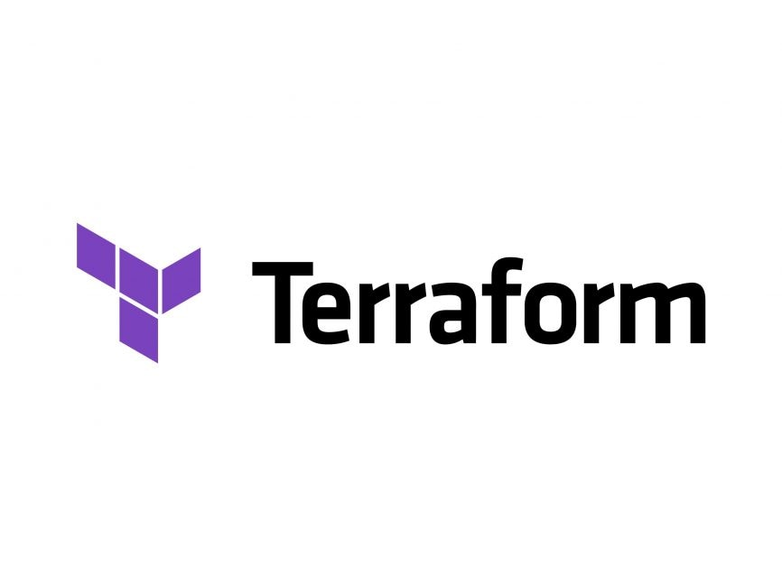
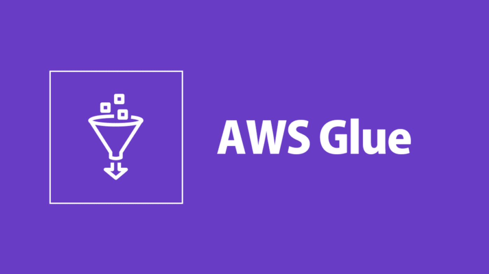
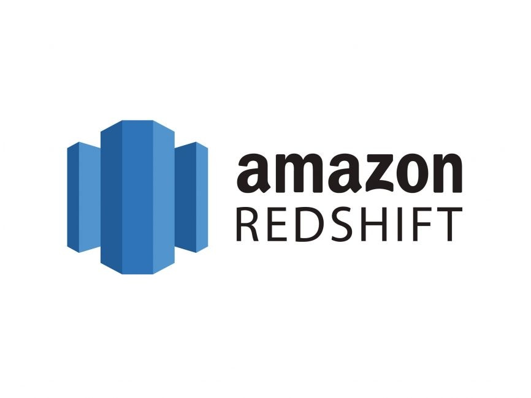

CitySim Workflow

Step 1: Data Generation
Simulated data generation using Python scripts.

Step 2: AWS Infrastructure
Terraform sets up AWS resources: S3, CloudWatch, VPC, and more.

Step 3: Data Streaming
Real-time data streaming via Apache Kafka.

Step 4: Data Processing
Apache Spark processes data with validation and aggregation.

Step 5: Data Storage
Raw and processed data are stored in AWS S3 buckets.

Step 6: Data Transformation
AWS Glue flattens and transforms data for analytics.
Step 7: Search & Indexing
Transformed data is pushed to OpenSearch for fast querying.

Step 8: Visualization
Tableau dashboards provide real-time data insights.
Step 9: Data Merging
AWS Glue merges hourly and nightly data files.
Step 10: Flattening Raw Data
Batch processing flattens large raw data files into CSV.

Step 11: RedShift Loading
Lambda and RedShift COPY command load data into RedShift tables.
Step 12: Data Cleanup
Lambda functions delete S3 data daily for a fresh start.